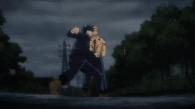
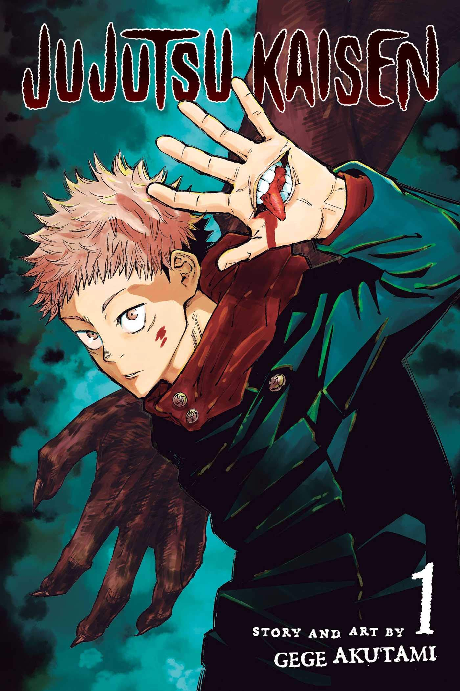

What Is An Action-Based Anime?
The action genre in anime contains high levels of intense action! In most animes that involve action, you will be seeing a lot of battles and intense fight scenes. This type of anime will have you on the edge of your seat. Just hope that the episode does not end in a cliff hanger... spoiler it does! During the action-packed fight scenes, you will witness characters fighting to their deaths which forces the viewer to root for their favorite character in the series. Just imagine how much time the creators of the anime spend to animate every body part when these characters are fighting each other. Essentially, the action genre contains a lot of battle scenes, fluid animation, and scenes that will pump adrenaline through your body. Here are a few examples of action-based animes.
Attack on Titan
 The human race is on the brink of extermination by Titans, giant creatures who pose a threat to civilization. What are Titans? They are giant creatures who have no intelligence, devour human beings and, worst of all, take pleasure in doing so. One of the several things that allow the human race to survive is the fact that they walled themselves in a city surrounded by tall walls, which are taller than the Titans. The city is peaceful until teenage boy Eren and his foster sister Mikasa witness an attack. The city's walls were destroyed by the Colossal Titan appearing out of nowhere. As a result, the smaller titans flood the city and kill every human in their path. The two kids are terrifed as they witness this horrible act. After the attack, Eren swears to join the Scouts claming that he will murder the remaining Titans to avenge his fallen comrades and loved ones. IMDb rated the anime a 8.9/10 and it aired in 2013.
The human race is on the brink of extermination by Titans, giant creatures who pose a threat to civilization. What are Titans? They are giant creatures who have no intelligence, devour human beings and, worst of all, take pleasure in doing so. One of the several things that allow the human race to survive is the fact that they walled themselves in a city surrounded by tall walls, which are taller than the Titans. The city is peaceful until teenage boy Eren and his foster sister Mikasa witness an attack. The city's walls were destroyed by the Colossal Titan appearing out of nowhere. As a result, the smaller titans flood the city and kill every human in their path. The two kids are terrifed as they witness this horrible act. After the attack, Eren swears to join the Scouts claming that he will murder the remaining Titans to avenge his fallen comrades and loved ones. IMDb rated the anime a 8.9/10 and it aired in 2013.
Jujutsu Kaisen
"Curses", which are simply supernatural spirits, haunt humanity from the shadows. These spirits hide in plain sight and consequently, people in society cannot see them. However, powerful humans known as "Jujutsu" sorcerers are able to see them. To prevent any threat to humanity, the sorcerers use mystical arts to banish them. High school student Yuuji Itadori finds a dried-up finger of the legendary Curse Sukuna Ryoumen and suddenly finds himself joining the fight against these spirits. Each time Yuuji eats one of the cursed fingers of Sukuna, he risks resurrecting Sukuna but also gains power to defeat his enemies. The other sorcerers are concerned with Yuuji because he is basically a vessel of a Cursed spirit, the most dangerous one in fact! Will Yuuji's freinds trust him? Can such power be controlled? There is only one way to find out, so watch Jujutsu Kaisen! IMDb rated the anime a 8.7/10 and it aired in 2020.
Naruto
 This anime begins on the day of Naruto Uzamaki's birth. During this day, the village of Konoha is attacked by the nine-tailed fox demon. This creature is the most powerful jinchuriki. To protect the village, Minato, Naruto's father who is also the 4th hokage, sacrificed his life and sealed the demon in his new born son. After the attack, Naruto is hated by everyone in the village because he has the nine-talied fox inside him. He has almost no friends which makes his life extremely difficult. Nonetheless, he graduates from the ninja academy, becomes a shinobi, and claims he will be the hokage of the Hidden Leaf Village. Throughout Naruto's journey, he is put in Team 7, consisting of him, Kakashi, Sakura, and Sasuke. There are a lot of themes in this anime such as love, freindship, hope, sacrifice, and more that apply to real life. If you watched Naruto, I would recommend watching Naruto Shippudden. IMDb rated the anime a 8.3/10 and it aired in 2002.
This anime begins on the day of Naruto Uzamaki's birth. During this day, the village of Konoha is attacked by the nine-tailed fox demon. This creature is the most powerful jinchuriki. To protect the village, Minato, Naruto's father who is also the 4th hokage, sacrificed his life and sealed the demon in his new born son. After the attack, Naruto is hated by everyone in the village because he has the nine-talied fox inside him. He has almost no friends which makes his life extremely difficult. Nonetheless, he graduates from the ninja academy, becomes a shinobi, and claims he will be the hokage of the Hidden Leaf Village. Throughout Naruto's journey, he is put in Team 7, consisting of him, Kakashi, Sakura, and Sasuke. There are a lot of themes in this anime such as love, freindship, hope, sacrifice, and more that apply to real life. If you watched Naruto, I would recommend watching Naruto Shippudden. IMDb rated the anime a 8.3/10 and it aired in 2002.
Demon Slayer: Kimetsu no Yaiba
 Tanjirou Kamado has experienced a difficult life ever since his father died. Although Tanjurou has no father and has to take care of his family, he is still able to enjoy an idyllic and joyful life in the mountains. This eventually ends as Tanjirou goes to a local village as a means of earning money. The night falls and Tanjirou is forced to take shelter in the house of a strange man, who warns him of flesh-eating demons. These demons lurk in the woods at night, preventing people from wandering alone in the night. Having trouble understanding the strange man, Tanjirou goes back to his home only to see his family slaughtered by demons. The only survivor is his sister Nezuko, who has been turned into a demon. Feeling angry and upset, he joins the Demon Slayer Corps and will do whatever it takes to slay his enemies and protect his sister. IMDb rated the anime a 8.7/10 and it aired in 2019.
Tanjirou Kamado has experienced a difficult life ever since his father died. Although Tanjurou has no father and has to take care of his family, he is still able to enjoy an idyllic and joyful life in the mountains. This eventually ends as Tanjirou goes to a local village as a means of earning money. The night falls and Tanjirou is forced to take shelter in the house of a strange man, who warns him of flesh-eating demons. These demons lurk in the woods at night, preventing people from wandering alone in the night. Having trouble understanding the strange man, Tanjirou goes back to his home only to see his family slaughtered by demons. The only survivor is his sister Nezuko, who has been turned into a demon. Feeling angry and upset, he joins the Demon Slayer Corps and will do whatever it takes to slay his enemies and protect his sister. IMDb rated the anime a 8.7/10 and it aired in 2019.